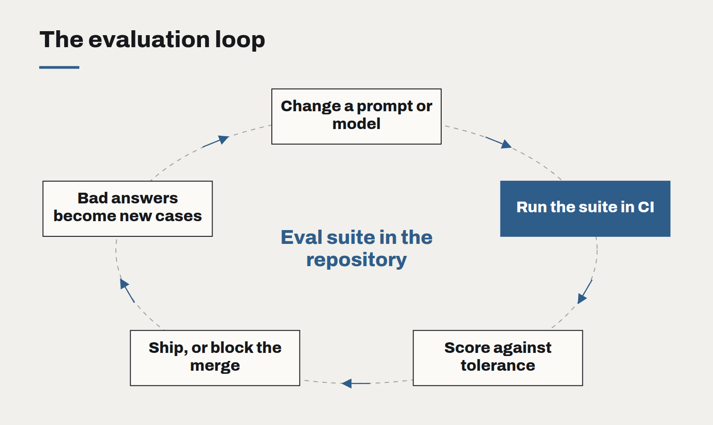

Evaluations are the new unit tests
An AI feature without an evaluation suite is a feature you cannot change safely. Treat the eval set like test code, and most of the fear goes out of shipping.
Ask a team how they know their AI feature works and the honest answer is often: we tried it a lot, and it seemed good. That is how software was tested before unit tests became normal. It works for a demo. It fails the first time someone changes a prompt, upgrades a model or adds a document to the knowledge base, and nobody can say whether things got better or worse.
The fix is the same one software engineering found twenty years ago. Write the checks down, run them automatically, and refuse to ship when they fail. For AI features, those checks are called evaluations, and they deserve the same status in the codebase as tests.
What an evaluation set is
At its simplest, an eval set is a file of inputs paired with what a good output looks like. For a support assistant, that might be two hundred real customer questions with the answer a senior agent would give. For a document extractor, a hundred invoices with the correct fields. For a classifier, a few thousand labelled examples.
Each example is scored. Some scores are exact: did it pick the right category, extract the right amount, refuse when it should. Some need judgement: is this answer faithful to the source, does it contain the key fact. For those, a second model can grade against a rubric, provided you check its grading against human judgement on a sample first.

Treat it like code
- Keep it in the repository. The eval set is versioned with the prompts and code it tests. A change to either runs the suite.
- Run it in CI. Every pull request that touches a prompt, a retrieval setting or a model version gets a score. A drop beyond a set tolerance blocks the merge.
- Add a case for every bug. When a user reports a bad answer, it becomes an eval example before it becomes a fix. The suite grows toward the ways your feature actually fails.
- Track the score over time. A chart of accuracy, cost and latency per release is the most persuasive document you can show a sponsor.
Test the parts, not just the whole
End-to-end scores tell you something is wrong; component scores tell you where. For a retrieval-based assistant, measure retrieval separately — was the right passage found — before measuring the answer. Most regressions we investigate turn out to be retrieval changes, not model changes, and a separate score finds them in minutes rather than days.
What it changes
The practical effect of a good eval suite is that change becomes cheap again. When a new model is released, you run the suite and know within an hour whether it is better for you, and at what cost. When a prompt needs adjusting for one awkward case, you can see immediately whether you broke three others. When a stakeholder asks whether the feature is getting better, you have a number.
Without one, every change is a gamble and the safest course is to never touch anything — which, for a technology improving as quickly as this one, is its own kind of failure.
If you cannot measure whether a change made it better, you are not iterating. You are guessing in production.
Governing AI use without banning it
Staff are already using AI tools, approved or not. A short, practical policy — backed by tools people actually want to use — protects the business better than a prohibition nobody follows.
Write prompts like specifications
The prompts that hold up in production read less like clever incantations and more like a well-written brief for a new colleague. Treat them as code: versioned, reviewed and tested.
The real cost of an AI feature
The token bill is the smallest line in the budget. Evaluation, review, support and change management are where AI features actually cost money — and where the business case should look first.